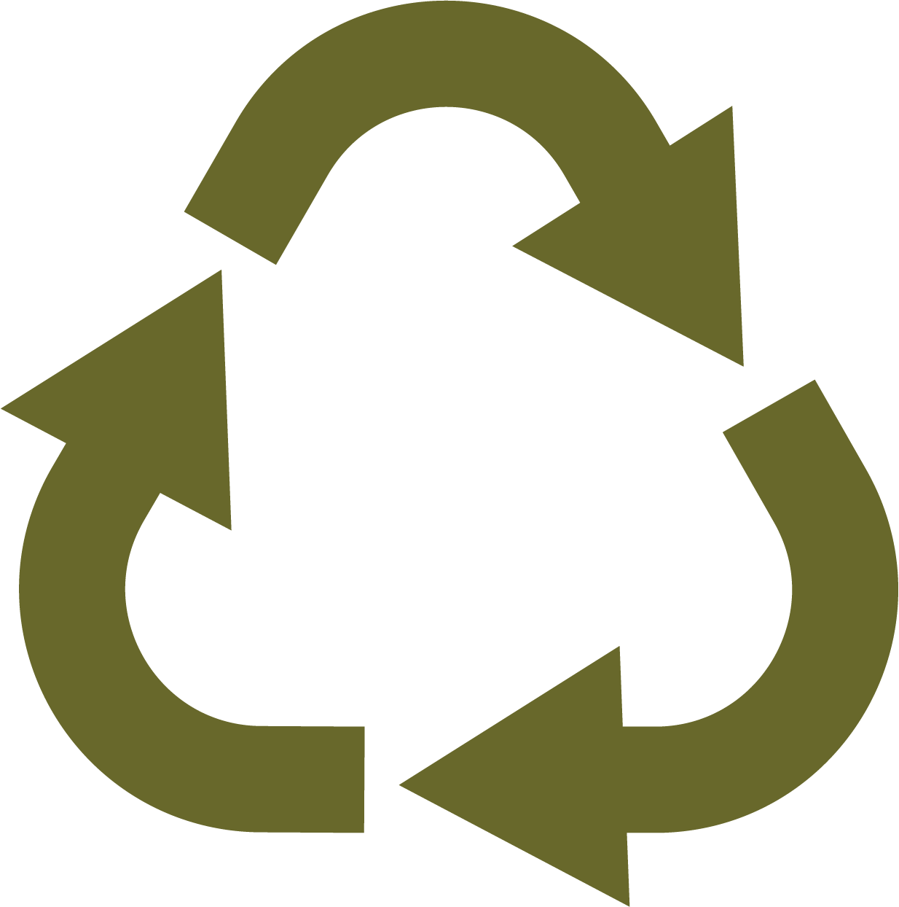
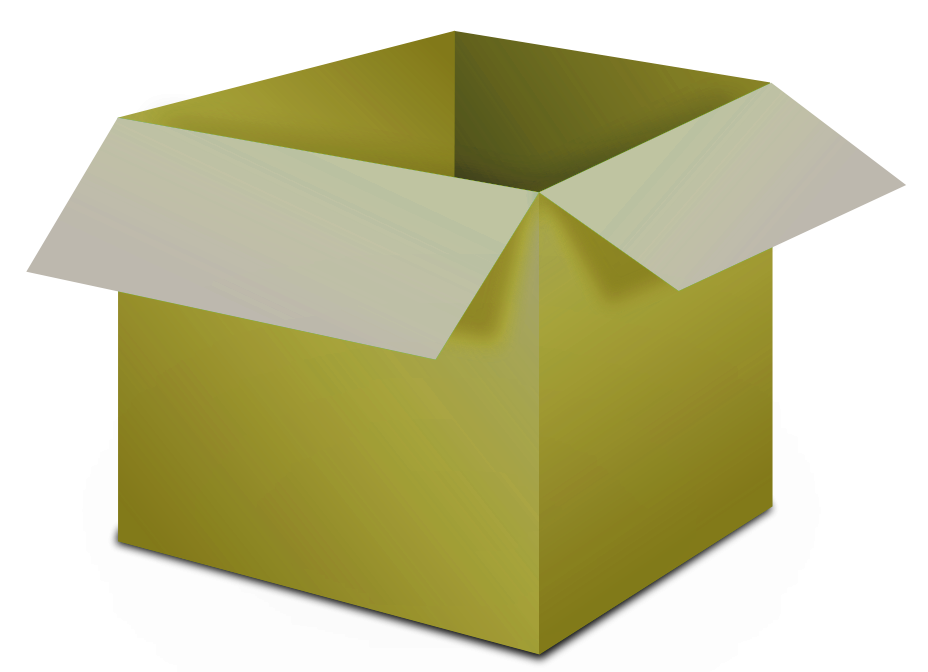

Welcome to ShipBack!
Discover
an idea that will
limit waste
in the shipping indistry!

Welcome to ShipBack!
Is your box ready to be returned?
X
Step 1
Is your box damaged?

done
next
For the best experience, please rotate your phone back to portrait.